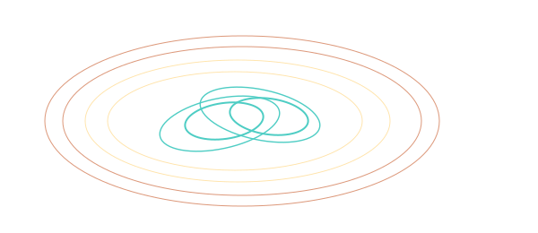

PORKCHOP

101 · zoom in
Porkchop Plots — when to launch, and why the windows are the windows.
Mission planners don't compute one trajectory to Mars — they compute millions, in a giant grid, and they paint a heatmap. Cheap trajectories show up as cool blue lobes. Expensive ones go red. The result, weirdly, looks like a pork chop. The cheap zone is the meat of the chop; the expensive ridge is the bone.
Why do we draw the whole map instead of just the optimum? Because real missions have constraints — a rocket that's only ready a particular year, a launch pad that's only available certain weeks, a landing site that needs a specific season at Mars. The porkchop lets you see ALL the trade-offs at once and pick the cheap-enough trajectory that fits your real-world calendar.
Six sections here, in reading order. Start with "What is a porkchop plot?" and walk through the axes (departure, time-of-flight), the colour scale (∆v heatmap), how to read the lobe shape (contour reading), and how to map the porkchop onto a specific rocket (viability). By the end you'll be able to look at /plan's porkchop for any of nine destinations and read it like a flight dynamicist.
→ Pick a section from the right rail to start reading.